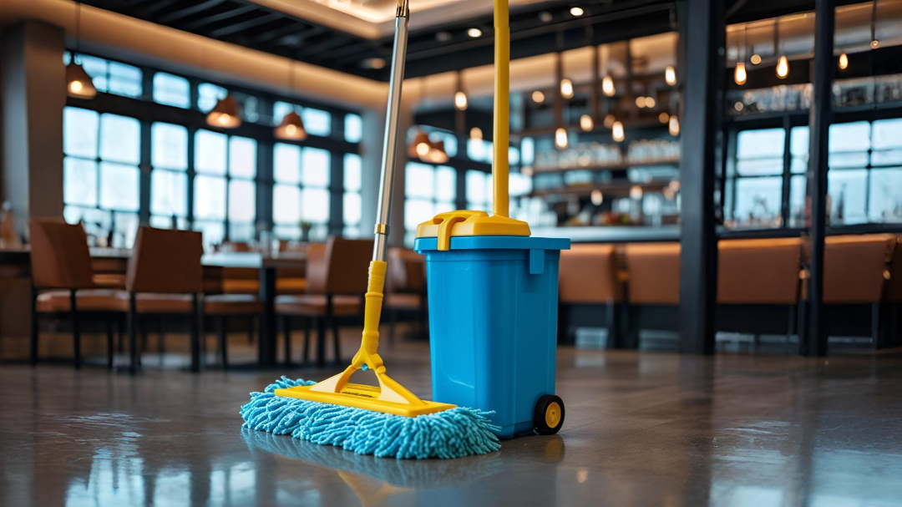

Tadilat sonrası temizlik, yenileme veya onarım işlemlerinden sonra alandaki kalıntıların, tozun ve atıkların tamamen ortadan kaldırılması için uygulanan detaylı temizlik hizmetidir. Savar Temizlik, yapısal düzenlemelerden sonra alanın ilk günkü hijyenine kavuşması için profesyonel çözümler sunar.
Tadilat Sonrası Temizlik Neden Gereklidir?
Tadilat sonrasında oluşan harç kalıntıları, boya lekeleri, alçı döküntüleri ve yoğun inşaat tozu, yaşam alanının sağlıklı biçimde kullanılmasını engeller. İnce temizlik yapılmadan kullanılan ortamlar, hem estetik açıdan rahatsız edici olur, hem de sağlık açısından risk barındırır.
Tadilat Sonrası Temizlik Nasıl Yapılır?
Temizlik süreci, öncelikle alan keşfi ile başlar. Ardından kaba atıklar toplanır, yüzey kazıma işlemleri yapılır ve ardından detaylı yüzey temizliği uygulanır. Fayans, parke, mutfak tezgâhları, camlar, prizler ve zemin geçiş noktaları özel ekipmanlarla arındırılır.
Tadilat Sonrası Temizlik Hangi Alanları Kapsar?
- Salon, oda ve mutfak zeminleri
- Banyo, lavabo, duş ve seramik yüzeyler
- Cam, çerçeve ve ayna detayları
- Tavan pervazları, priz ve düğme çevreleri
- Balkon, merdiven ve dış cephe kısımları
Tadilat Sonrası Temizlikte Hangi Ekipmanlar Kullanılır?
- Islak-kuru vakumatlar: İnşaat tozunun tamamen çekilmesini sağlar.
- Basınçlı su sistemleri: Balkon, teras ve dış cephedeki kalıntıları çözer.
- Mikrofiber bezler ve yüzey dostu fırçalar: Hassas yüzeylerde iz bırakmadan detaylı temizlik yapar.
- Yüzeye uygun kimyasal çözücüler: Yüzeyin zarar görmesini önleyerek lekeleri çıkarır.
Tadilat Sonrası Temizliği - Fiyatlar
Tadilat sonrası temizliği fiyatları; alanın büyüklüğü, tadilatın kapsamı, yüzey tipi ve temizlik süresi gibi kriterlere göre belirlenir. Yapınızın yeniden kullanılabilir hale gelmesi için özel planlanmış hizmet sunar. Fiyat teklifi almak için bizimle iletişime geçebilirsiniz.